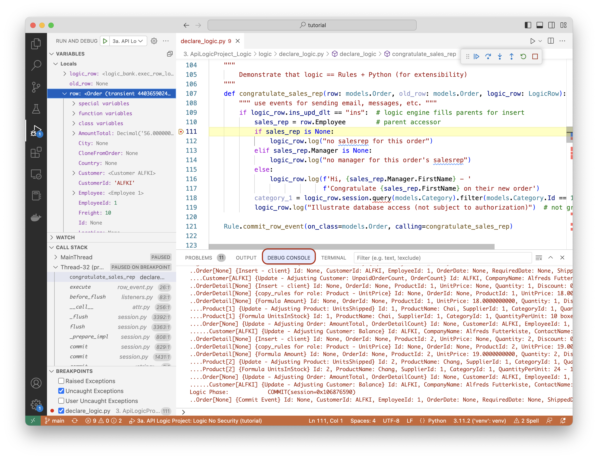

Why Logic
TL;DR - Remarkable Reduction of Backend Logic With Spreadsheet-like Rules
For transaction systems, backend multi-table constraint and derivation logic is often nearly half the system. API Logic Server automates such logic with unique spreadsheet-like rules, declared in Python, extensible with events as needed.
 Key Takeaway
Key Takeaway
Rules are 40X more concise than code, and can improve quality.
Rules are a declarative approach that automates remarkable amounts of backend logic:
| Declarative Rules Automate | Which Means |
Why It Matters |
|---|---|---|
| Invocation | Rules fire when referenced data changes Eg., Customer balance adjusted when order amount (or Customer-id) changes |
Quality - no missed "corner cases" Conciseness - watch/react and data access code eliminated |
| Ordering | Execution ordered by automatic dependency analysis | Maintenance - eliminates code analysis for inserting new code |
| Optimization | System prunes rules, optimizes SQL | Reduces effort for scalability |
Rules operate by listening to SQLAlchemy events. Like a spreadsheet, rules watch for changes, react by automatically executing relevant rules, which can chain to activate other rules. You can visualize the watch/react/chain process here.
Problem: Code Explosion
In conventional approaches, such logic is nearly half the system, due to code explosion. A typical design specification of 5 lines explodes into 200 lines of legacy code).
5 Line Spec Explodes into 200 Lines of Legacy Code...
Let's imagine we have a "cocktail napkin spec" for checking credit, shown (in blue) in the diagram below. How might we enforce such logic?
-
In UI controllers - this is the most common choice. It's actually the worst choice, since it offers little re-use, and does not apply to non-UI cases such as API-based application integration.
-
Centralized in the server - in the past, we might have written triggers, but a modern software architecture centralizes such logic in an App Server tier. If you are using an ORM such as SQLAlchemy, you can ensure sharing with
before_flushevents as shown below.
After we've determined where to put the code, we then have to write it. Our simple 5 line cocktail napkin specification explodes into 200 lines of legacy code):

It's also incredibly repetitive - you often get the feeling you're doing the same thing over and over.
And you're right. It's because backend logic follows patterns of "what" is supposed to happen. And your code is the "how".
Solution: Rules Are An Executable Design
API Logic -- unique to API Logic Server -- consists of Rules, extensible with Python.
Rules typically automate over 95% of such logic, and are 40X more concise. Rules are conceptually similar to spreadsheet cell formulas.
For this typical check credit design (in blue), the 5 rules shown below (lines 64-79) represent the same logic as 200 lines of code:

See the code here
"""
Logic Design ("Cocktail Napkin Design") for User Story Check Credit
Customer.Balance <= CreditLimit
Customer.Balance = Sum(Order.AmountTotal where unshipped)
Order.AmountTotal = Sum(OrderDetail.Amount)
OrderDetail.Amount = Quantity * UnitPrice
OrderDetail.UnitPrice = copy from Product
"""
Rule.constraint(validate=models.Customer, # logic design translates directly into rules
as_condition=lambda row: row.Balance <= row.CreditLimit,
error_msg="balance ({row.Balance}) exceeds credit ({row.CreditLimit})")
Rule.sum(derive=models.Customer.Balance, # adjust iff AmountTotal or ShippedDate or CustomerID changes
as_sum_of=models.Order.AmountTotal,
where=lambda row: row.ShippedDate is None) # adjusts - *not* a sql select sum...
Rule.sum(derive=models.Order.AmountTotal, # adjust iff Amount or OrderID changes
as_sum_of=models.OrderDetail.Amount)
Rule.formula(derive=models.OrderDetail.Amount, # compute price * qty
as_expression=lambda row: row.UnitPrice * row.Quantity)
Rule.copy(derive=models.OrderDetail.UnitPrice, # get Product Price (e,g., on insert, or ProductId change)
from_parent=models.Product.UnitPrice)
"""
Demonstrate that logic == Rules + Python (for extensibility)
"""
def congratulate_sales_rep(row: models.Order, old_row: models.Order, logic_row: LogicRow):
""" use events for sending email, messages, etc. """
if logic_row.ins_upd_dlt == "ins": # logic engine fills parents for insert
sales_rep = row.Employee
if sales_rep is None:
logic_row.log("no salesrep for this order")
elif sales_rep.Manager is None:
logic_row.log("no manager for this order's salesrep")
else:
logic_row.log(f'Hi, {sales_rep.Manager.FirstName} - '
f'Congratulate {sales_rep.FirstName} on their new order')
Rule.commit_row_event(on_class=models.Order, calling=congratulate_sales_rep)
Declare, Extend, Manage
Use standard tools - standard language (Python), IDEs, and tools as described below.
Declare: Python
Rules are declared in Python, using your IDE as shown above.
Code Completion
Your IDE code completion services can aid in discovering logic services. There are 2 key elements:
- Discover rules by
Rule. - Discovery logic services made available through
logic_row
If these aren't working, ensure your
venvsetup is correct - consult the Trouble Shooting Guide.
You can find examples of these services in the sample ApiLogicProject.

Extend: Python
While 95% is certainly remarkable, it's not 100%. Automating most of the logic is of no value unless there are provisions to address the remainder.
That provision is standard Python, provided as standard events (lines 84-100 in the first screen shot above). This will be typically be used for non-database oriented logic such as files and messages, and for extremely complex database logic.
Manage: Your IDE, SCCS
The screen shot above illustrates you use your IDE (e.g., VSCode, PyCharm) to declare logic using Python, with all the familiar features of code completion and syntax high-lighting. You can also use the debugger, and familiar Source Code Control tools such as git.
Logic Debugging
If we use Swagger and run ServicesEndPoint - Post/add_order, we get the following :

IDE Debugger
This illustrates that you can stop in your rule logic (the red dot on line 111), and use your IDE debugger (here, VSCode) to see variables, step through execution, etc.
Logic Logging
In addition, the system creates a ""logic log** of all rules that fire, to aid in debugging by visualizing rule execution:
- Each line represents a rule execution, showing row state (old/new values), and the {reason} that caused the update (e.g., client, sum adjustment)
- Log indention shows multi-table chaining
Logging is performed using standard Python logging, with a logger named
logic_logger. Useinfofor tracing, anddebugfor additional information (e.g., a declared rules are logged).
VSCode debugging
In VSCode, set "redirectOutput": true in your Launch Configuration. This directs logging output to the Debug Console, where it is not word-wrapped (word-wrap obscures the multi-table chaining).

Key Aspects of Logic
While conciseness is the most immediately obvious aspect of logic, rules provide deeper value as summarized below.
| Concept | Rule Automation | Why It Matters |
|---|---|---|
| Re-use | Automatic re-use over all resources and actions | Velocity / Conciseness: Eliminates logic replication over multiple UI controllers or services. |
| Invocation | Automatic logic execution, on referenced data changes | Quality: Eliminates the "code was there but not called" problem. Rules are active, transforming ‘dumb’ database objects into smart business objects |
| Execution Order | Automatic ordering based on dependencies | Maintenance: Eliminates the "where do I insert this code" problem - the bulk of maintenance effort. |
| Dependency Management | Automatic chaining | Conciseness: Eliminates the code that tests "what's changed" to invoke relevant logic |
| Multi-Table Chaining | Multi-Table Transactions | Simplicity: Eliminates and optimizes data access code |
| Persistence | Automatic optimization | Performance: Unlike Rete engines which have no concept of old values, transaction logic can prune rules for unchanged data, and optimize for adjustment logic based on the difference between old/new values. This can literally result in sub-second performance instead of multiple minutes, and can be tuned without recoding.. |
See also the FAQs.
Concise
Automatic dependency management means that this logic is eliminated, so rules can be n-fold more concise as explained at the top of this page.
Automatic Reuse
Just as a spreadsheet reacts to inserts, updates and deletes to a summed column, rules automate adding, deleting and updating orders. This is how 5 rules represent the same logic as 200 lines of code.
Our cocktail napkin spec is really nothing more than a set of spreadsheet-like rules that govern how to derive and constrain our data. And by conceiving of the rules as associated with the data (instead of a UI button), rules conceived for Place Order automatically address these related transactions:
- add order
- Ship Order illustrates cascade, another form of multi-table logic
- delete order
- assign order to different customer
- re-assign an Order Detail to a different Product, with a different quantity
- add/delete Order Detail
Scalability: Prune and Optimize
Scalability requires more than clustering - SQLs must be pruned and optimized. For example, the balance rule:
- is pruned if only a non-referenced column is altered (e.g., Shipping Address)
- is optimized into a 1-row adjustment update instead of an expensive SQL aggregate
For more on how logic automates and optimizes multi-table transactions, click here.
Automatic Ordering
The system parses your derivation rules to determine dependencies, and uses this to order execution. This occurs once per session on activation, so rule declaration changes automatically determine a new order.
This is significant for iterative development and maintenance, eliminating the bulk of time spent determining where do I insert this new logic.
Control for actions and constraints
Constraint and action rules are executed in their declaration order.